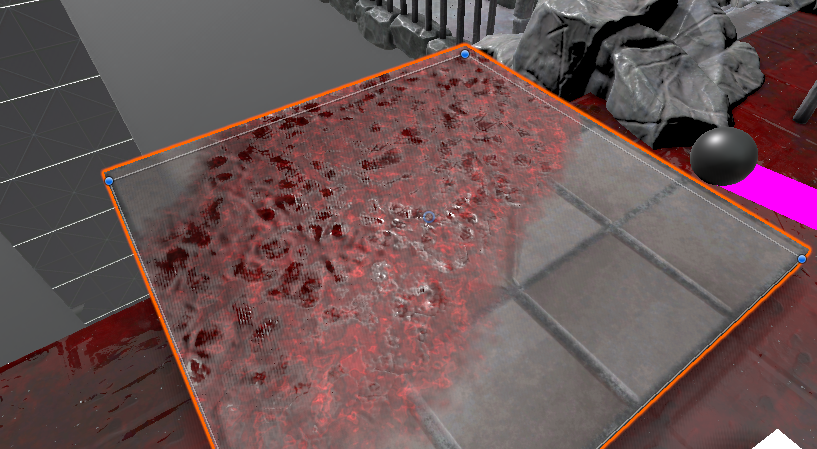
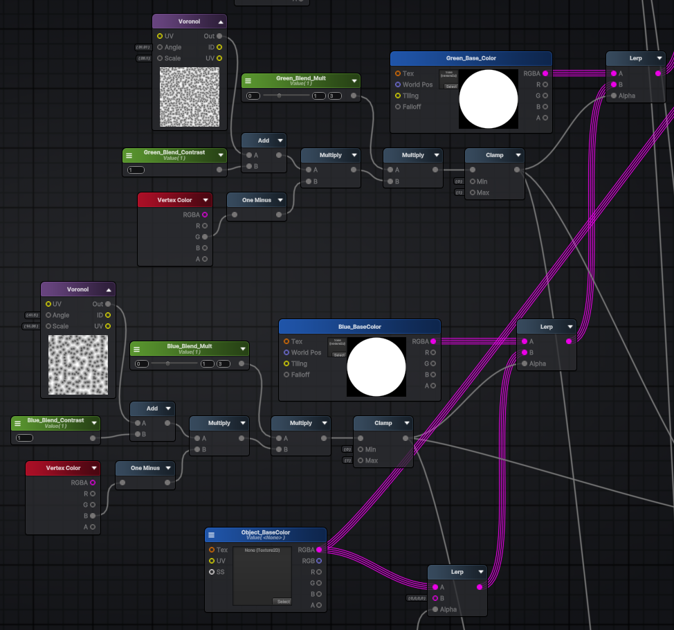
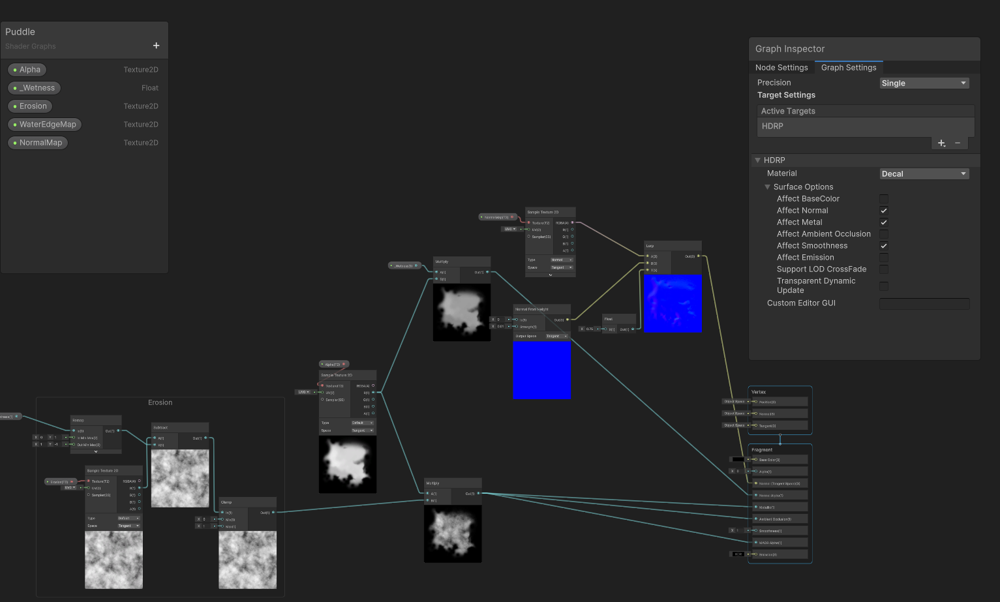
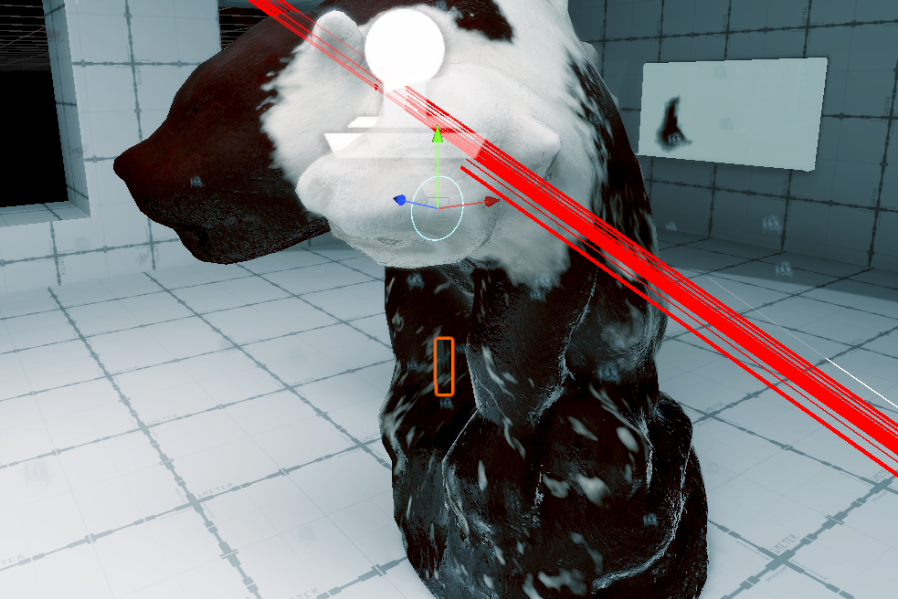

Infernal Cleaner
Sponge
Andy, Hannah, Alan, Sofia
Overview
Infernal Cleaner is a PowerWash Simulator-inspired, casual cleaning game set in Hell.
As a tortured soul bound to the devil, the player uses a power washing hose to clean blood from the walls and dungeons of the Underworld.
By cleaning objects, the player can earn shillings which can be spent to upgrade nozzles and hose components.
Pillars
- Satisfying Cleaning
- Advancement & Completion
- Wretchedness in Hell
Art Development Process
- Rock-based kitbash and tilables to create consistency.
- Contrast of blood and surfaces.
- VFX key to satisfying game feel.
- Creative tech art solutions for cleaning and blood distribution.
- Realtime + baked lighting
Design Development Process
- Complete level design overhaul to reduce world size (and reduce technical headache).
- Level acts as a tutorial, introducing the key mechanics.
- Voice cues and notes throughout scene for world building,
- Pushed planned mechanics like vacuum further down the pipeline because we didn’t get them feeling satisfying enough.
- Balancing HEAPS OF BLOOD vs player ability/time to clean rooms.
- Prioritising the SATISFYING game pillar.
Cleaning Hell, One Vertex at a Time
Technical Art, Minus the Technicalities
Demo
- Runtime vertex painting
- Layers of blood
- Visual effects
1. Runtime vertex painting
Render Texture
or
Vertex Painting
Problems with runtime vertex painting:
- No GPU instancing, mesh data different for each asset.
- Introduces additional 3D asset requirements.
- Low FPS issue when vertex painting.
// Paint-vert: result = Sphere Overlap Check on a raycast.
// This is within a coroutine.
foreach (var col in result)
{
if (!col)
continue;
col.TryGetComponent(out Cleanable cleanable);
if (cleanable)
{
Vector3 returnColor = Global.I.PaintVert(
col.GetComponent<MeshRenderer>(),
hit.point,
// Paint strength depending on number of objs being painted
paintStrengthNormal * result.Length,
paintRadius,
//
cleanable.KdTree);
}
// Paint 1 mesh per frame
yield return null;
}
- Splitting tasks over multiple frames with coroutines.

- Spatial partitioned the mesh using k-d tree.
// the KDTree was generated during Init()
KDQuery query = new KDQuery();
query.Radius(tree, originLocal, radius, results);
float redAmountDelta = 0f;
float greenAmountDelta = 0f;
float blueAmountDelta = 0f;
foreach (int i in results)
{
Vector3 vertex = vertices[i];
float distanceSqr = (originLocal - vertex).sqrMagnitude;
if (distanceSqr < radiusSqr)
{
float proximity = 1.0f - Mathf.Sqrt(distanceSqr) / radius;
float originalRed = colors[i].r;
float originalGreen = colors[i].g;
float originalBlue = colors[i].b;
float redChange = channelStrength.x * proximity * Time.deltaTime;
float greenChange = channelStrength.y * proximity * Time.deltaTime;
float blueChange = channelStrength.z * proximity * Time.deltaTime;
float newRed = Mathf.Clamp01(originalRed - redChange);
float newGreen = Mathf.Clamp01(originalGreen- greenChange);
float newBlue = Mathf.Clamp01(originalBlue- blueChange);
redAmountDelta += originalRed - newRed;
greenAmountDelta += originalGreen - newGreen;
blueAmountDelta += originalBlue - newBlue;
// Update vertex color array
colors[i].r = newRed;
colors[i].g = newGreen;
colors[i].b = newBlue;
}
}
...

- Occlusion culling to control draw-calls.
2. Layers of blood
- Master Shader: Triplanar sample for blood layers.
- Problem: 15 texture samples...
- Problem: lightmap bake will pick up the redness from mesh
Master Material

3. Visual effects
This was implemented on master shader's emission output.
VFX: Puddle
- Object-Pooled Decal Projector
- SetFloat() on raycast to increase puddle size (erosion map lerp)
Puddle Decal Shader
We're modifying only Normal,Metal*,Smoothness.

VFX: Droplets 
- Spawn on raycast from Object-Pool